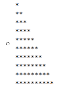
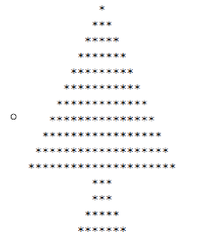
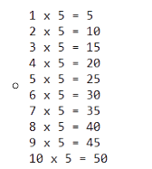
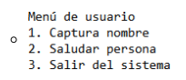

Condicionales
-
Realizar la siguiente figura por medio del ciclo Para.

Códigos de la solución
Pseint

Proceso Punto_1 Definir controlI Como Entero; Definir controlJ Como Entero; Definir filas Como Entero; filas <- 10; Para controlI <-1 Hasta filas Con Paso 1 Hacer Para controlJ <-1 Hasta controlI Con Paso 1 Hacer Si controlI = controlJ Entonces Escribir "*"; SiNo Escribir Sin Saltar "*"; FinSi FinPara FinPara FinProcesoJava
import java.util.Scanner; public class Main { static Scanner input = new Scanner(System.in); public static void main(String[] args) { int opcion; Figura figura = new Figura(10); do { System.out.println("Seleccione una de las opciones de las que se encuentran a continuación: "); System.out.println("1. Imprimir triángulo del punto 1."); System.out.println("2. Imprimir triángulo del punto 2."); System.out.println("3. Imprimir arbol del punto 3."); System.out.println("4. Imprimir tabla de multiplicar de un número (punto 4)."); opcion = input.nextInt(); if (opcion == 1) { // Imprimir triángulo punto 1 figura.dibujarTrianguloPunto1(); } else if (opcion == 2) { // Imprimir punto 2 System.out.println(); figura.dibujarTrianguloPunto2(); } else if (opcion == 3) { // imprimir arbol del punto 3 Figura arbol = new Figura(11, 21); arbol.dibujarArbol(); arbol.dibujarTronco(); } else if (opcion == 4) { // Imprimir tabla de multiplicar punto 4. tablaMultiplicar(); } else { System.out.println("La opción sdeleccionada no es válida"); } System.out.println("ingrese 5 si desea finalizar la ejecución del programa o cualquier otro número para continuar con otra opción"); opcion = input.nextInt(); }while (opcion != 5); } public static void tablaMultiplicar(){ int multiplicando; System.out.print("Ingrese un número para obtener su tabla de multiplicar: "); multiplicando = input.nextInt(); System.out.println("Tabla del " + multiplicando); for (int i = 1; i <= 10; i++){ System.out.println(i + " X " + multiplicando + " = " + i * multiplicando); } } } public class Figura { private final int numeroFilas; private int numerocolumnas; public Figura(int filas){ this.numeroFilas = filas; } public Figura (int filas, int columnas){ this.numeroFilas = filas; this.numerocolumnas = columnas; } //Imprimir triángulo del punto 1 con ciclo for o Para. public void dibujarTrianguloPunto1(){ for (int fila = 0 ; fila < this.numeroFilas; fila++){ // Ciclo for que imprime asteriscos de forma ascendente según el número de la fila actual. for(int columna = 0; columna <= fila; columna++){ if(fila==columna){ System.out.println("*"); }else { System.out.print("*"); } } } } //Imprimir triángulo punto 2 con ciclo while o Mientras public void dibujarTrianguloPunto2(){ int fila = this.numeroFilas; int columna; while ( fila > 0){ columna = 1; //Imprime * cuando la columna sea mayor o igual a la fila y imprime espacios mientras sea menor. while(columna <= this.numeroFilas){ if(columna >= fila){ if(columna != this.numeroFilas){ System.out.print("*"); }else { System.out.println("*"); // Salta de linea cuando imprime el ultimo * de la fila. } }else { System.out.print(" "); } columna ++; } fila --; } } // Imprimir arbol del punto 3 con Do - While o Hacer Mientras public void dibujarArbol(){ int mitadArbol = (this.numerocolumnas - 1)/2; int fila = 1; int columna; do { columna = 0; do{ if(columna > (mitadArbol - fila) && columna < (mitadArbol + fila) ){ if(columna == mitadArbol + fila -1){ System.out.println("*"); break; }else { System.out.print("*"); } }else{ System.out.print(" "); } columna ++; }while (columna < this.numerocolumnas); fila ++; }while (fila <= this.numeroFilas); } public void dibujarTronco(){ int columna; int fila = 2; int repeticion = 0; int mitadArbol = (this.numerocolumnas - 1)/2; do{ columna = 0; do { if(columna > (mitadArbol - fila) && columna < (mitadArbol + fila)){ if(columna == mitadArbol + fila - 1){ System.out.println("*"); }else { System.out.print("*"); } }else { System.out.print(" "); } columna ++; }while(columna < (mitadArbol + fila)); if (repeticion >= 1){ fila ++; } repeticion ++; }while(repeticion < 4); } } -
. Realizar la siguiente figura por medio del ciclo Mientras - Hacer.
Códigos de la solución
Pseint
Proceso Punto_2 Definir controlI Como Entero; Definir controlJ Como Entero; controlI <- 10; Mientras controlI > 0 Hacer controlJ <- 1; Mientras controlJ <= 10 Hacer Si controlJ >= controlI Entonces Si controlJ <> 10 Entonces Escribir Sin Saltar "*"; SiNo Escribir "*"; FinSi SiNo Escribir Sin Saltar " "; FinSi controlJ <- controlJ + 1; FinMientras controlI <- controlI - 1; FinMientras FinProcesoJava
import java.util.Scanner; public class Main { static Scanner input = new Scanner(System.in); public static void main(String[] args) { int opcion; Figura figura = new Figura(10); do { System.out.println("Seleccione una de las opciones de las que se encuentran a continuación: "); System.out.println("1. Imprimir triángulo del punto 1."); System.out.println("2. Imprimir triángulo del punto 2."); System.out.println("3. Imprimir arbol del punto 3."); System.out.println("4. Imprimir tabla de multiplicar de un número (punto 4)."); opcion = input.nextInt(); if (opcion == 1) { // Imprimir triángulo punto 1 figura.dibujarTrianguloPunto1(); } else if (opcion == 2) { // Imprimir punto 2 System.out.println(); figura.dibujarTrianguloPunto2(); } else if (opcion == 3) { // imprimir arbol del punto 3 Figura arbol = new Figura(11, 21); arbol.dibujarArbol(); arbol.dibujarTronco(); } else if (opcion == 4) { // Imprimir tabla de multiplicar punto 4. tablaMultiplicar(); } else { System.out.println("La opción sdeleccionada no es válida"); } System.out.println("ingrese 5 si desea finalizar la ejecución del programa o cualquier otro número para continuar con otra opción"); opcion = input.nextInt(); }while (opcion != 5); } public static void tablaMultiplicar(){ int multiplicando; System.out.print("Ingrese un número para obtener su tabla de multiplicar: "); multiplicando = input.nextInt(); System.out.println("Tabla del " + multiplicando); for (int i = 1; i <= 10; i++){ System.out.println(i + " X " + multiplicando + " = " + i * multiplicando); } } } public class Figura { private final int numeroFilas; private int numerocolumnas; public Figura(int filas){ this.numeroFilas = filas; } public Figura (int filas, int columnas){ this.numeroFilas = filas; this.numerocolumnas = columnas; } //Imprimir triángulo del punto 1 con ciclo for o Para. public void dibujarTrianguloPunto1(){ for (int fila = 0 ; fila < this.numeroFilas; fila++){ // Ciclo for que imprime asteriscos de forma ascendente según el número de la fila actual. for(int columna = 0; columna <= fila; columna++){ if(fila==columna){ System.out.println("*"); }else { System.out.print("*"); } } } } //Imprimir triángulo punto 2 con ciclo while o Mientras public void dibujarTrianguloPunto2(){ int fila = this.numeroFilas; int columna; while ( fila > 0){ columna = 1; //Imprime * cuando la columna sea mayor o igual a la fila y imprime espacios mientras sea menor. while(columna <= this.numeroFilas){ if(columna >= fila){ if(columna != this.numeroFilas){ System.out.print("*"); }else { System.out.println("*"); // Salta de linea cuando imprime el ultimo * de la fila. } }else { System.out.print(" "); } columna ++; } fila --; } } // Imprimir arbol del punto 3 con Do - While o Hacer Mientras public void dibujarArbol(){ int mitadArbol = (this.numerocolumnas - 1)/2; int fila = 1; int columna; do { columna = 0; do{ if(columna > (mitadArbol - fila) && columna < (mitadArbol + fila) ){ if(columna == mitadArbol + fila -1){ System.out.println("*"); break; }else { System.out.print("*"); } }else{ System.out.print(" "); } columna ++; }while (columna < this.numerocolumnas); fila ++; }while (fila <= this.numeroFilas); } public void dibujarTronco(){ int columna; int fila = 2; int repeticion = 0; int mitadArbol = (this.numerocolumnas - 1)/2; do{ columna = 0; do { if(columna > (mitadArbol - fila) && columna < (mitadArbol + fila)){ if(columna == mitadArbol + fila - 1){ System.out.println("*"); }else { System.out.print("*"); } }else { System.out.print(" "); } columna ++; }while(columna < (mitadArbol + fila)); if (repeticion >= 1){ fila ++; } repeticion ++; }while(repeticion < 4); } } -
Realizar la siguiente figura por medio del ciclo Repetir - Hasta Que.

Códigos de la solución
Pseint
Proceso Punto_3 Definir i, j, k, l Como Entero; i <- 0; j <- 0; k <- 0; l <- 1; Repetir Si i <> 10 Entonces Repetir Escribir Sin Saltar " "; j <- j + 1; Hasta Que j >= 10 - i FinSi Repetir Si k = 2*i Entonces Escribir "*"; SiNo Escribir Sin Saltar "*"; FinSi k <- k + 1; Hasta Que k > 2 * i i <- i + 1; j <- 0; k <- 0; Hasta Que i > 10 i <- 1; Repetir Repetir Escribir Sin Saltar " "; j <- j + 1; Hasta Que j >= 10 - i Repetir Si k = 2*i Entonces Escribir "*"; SiNo Escribir Sin Saltar "*"; FinSi k <- k + 1; Hasta Que k > 2*i Si i <= 2 Entonces j <- 0; k <- 0; FinSi l <- l + 1; Si l=1 o l=2 Entonces i <- 1; SiNo Si l = 3 Entonces i <- 2; SiNo i <- 3; FinSi FinSi Hasta Que l > 4 FinProcesoJava
import java.util.Scanner; public class Main { static Scanner input = new Scanner(System.in); public static void main(String[] args) { int opcion; Figura figura = new Figura(10); do { System.out.println("Seleccione una de las opciones de las que se encuentran a continuación: "); System.out.println("1. Imprimir triángulo del punto 1."); System.out.println("2. Imprimir triángulo del punto 2."); System.out.println("3. Imprimir arbol del punto 3."); System.out.println("4. Imprimir tabla de multiplicar de un número (punto 4)."); opcion = input.nextInt(); if (opcion == 1) { // Imprimir triángulo punto 1 figura.dibujarTrianguloPunto1(); } else if (opcion == 2) { // Imprimir punto 2 System.out.println(); figura.dibujarTrianguloPunto2(); } else if (opcion == 3) { // imprimir arbol del punto 3 Figura arbol = new Figura(11, 21); arbol.dibujarArbol(); arbol.dibujarTronco(); } else if (opcion == 4) { // Imprimir tabla de multiplicar punto 4. tablaMultiplicar(); } else { System.out.println("La opción sdeleccionada no es válida"); } System.out.println("ingrese 5 si desea finalizar la ejecución del programa o cualquier otro número para continuar con otra opción"); opcion = input.nextInt(); }while (opcion != 5); } public static void tablaMultiplicar(){ int multiplicando; System.out.print("Ingrese un número para obtener su tabla de multiplicar: "); multiplicando = input.nextInt(); System.out.println("Tabla del " + multiplicando); for (int i = 1; i <= 10; i++){ System.out.println(i + " X " + multiplicando + " = " + i * multiplicando); } } } public class Figura { private final int numeroFilas; private int numerocolumnas; public Figura(int filas){ this.numeroFilas = filas; } public Figura (int filas, int columnas){ this.numeroFilas = filas; this.numerocolumnas = columnas; } //Imprimir triángulo del punto 1 con ciclo for o Para. public void dibujarTrianguloPunto1(){ for (int fila = 0 ; fila < this.numeroFilas; fila++){ // Ciclo for que imprime asteriscos de forma ascendente según el número de la fila actual. for(int columna = 0; columna <= fila; columna++){ if(fila==columna){ System.out.println("*"); }else { System.out.print("*"); } } } } //Imprimir triángulo punto 2 con ciclo while o Mientras public void dibujarTrianguloPunto2(){ int fila = this.numeroFilas; int columna; while ( fila > 0){ columna = 1; //Imprime * cuando la columna sea mayor o igual a la fila y imprime espacios mientras sea menor. while(columna <= this.numeroFilas){ if(columna >= fila){ if(columna != this.numeroFilas){ System.out.print("*"); }else { System.out.println("*"); // Salta de linea cuando imprime el ultimo * de la fila. } }else { System.out.print(" "); } columna ++; } fila --; } } // Imprimir arbol del punto 3 con Do - While o Hacer Mientras public void dibujarArbol(){ int mitadArbol = (this.numerocolumnas - 1)/2; int fila = 1; int columna; do { columna = 0; do{ if(columna > (mitadArbol - fila) && columna < (mitadArbol + fila) ){ if(columna == mitadArbol + fila -1){ System.out.println("*"); break; }else { System.out.print("*"); } }else{ System.out.print(" "); } columna ++; }while (columna < this.numerocolumnas); fila ++; }while (fila <= this.numeroFilas); } public void dibujarTronco(){ int columna; int fila = 2; int repeticion = 0; int mitadArbol = (this.numerocolumnas - 1)/2; do{ columna = 0; do { if(columna > (mitadArbol - fila) && columna < (mitadArbol + fila)){ if(columna == mitadArbol + fila - 1){ System.out.println("*"); }else { System.out.print("*"); } }else { System.out.print(" "); } columna ++; }while(columna < (mitadArbol + fila)); if (repeticion >= 1){ fila ++; } repeticion ++; }while(repeticion < 4); } } -
Se requiere un programa que pueda crear la tabla de multiplicar del número que el usuario indique por medio del ciclo Para;
esta debe ser impresa del 1 al 10. Ejemplo, si el usuario indica que desea crear la tabla del 5, entonces el resultado debería ser
el siguiente:

Códigos de la solución
Pseint
Proceso Punto_4 Definir multiplicando, multiplicador, producto Como Entero; Escribir "Ingrese un número para obtener su tabla de multiplicar: "; Leer multiplicando; Para multiplicador <- 1 Hasta 10 Con Paso 1 Hacer producto <- multiplicando * multiplicador; Escribir multiplicador, " X ", multiplicando, " = ", producto; FinPara FinProcesoJava
import java.util.Scanner; public class Main { static Scanner input = new Scanner(System.in); public static void main(String[] args) { int opcion; Figura figura = new Figura(10); do { System.out.println("Seleccione una de las opciones de las que se encuentran a continuación: "); System.out.println("1. Imprimir triángulo del punto 1."); System.out.println("2. Imprimir triángulo del punto 2."); System.out.println("3. Imprimir arbol del punto 3."); System.out.println("4. Imprimir tabla de multiplicar de un número (punto 4)."); opcion = input.nextInt(); if (opcion == 1) { // Imprimir triángulo punto 1 figura.dibujarTrianguloPunto1(); } else if (opcion == 2) { // Imprimir punto 2 System.out.println(); figura.dibujarTrianguloPunto2(); } else if (opcion == 3) { // imprimir arbol del punto 3 Figura arbol = new Figura(11, 21); arbol.dibujarArbol(); arbol.dibujarTronco(); } else if (opcion == 4) { // Imprimir tabla de multiplicar punto 4. tablaMultiplicar(); } else { System.out.println("La opción sdeleccionada no es válida"); } System.out.println("ingrese 5 si desea finalizar la ejecución del programa o cualquier otro número para continuar con otra opción"); opcion = input.nextInt(); }while (opcion != 5); } public static void tablaMultiplicar(){ int multiplicando; System.out.print("Ingrese un número para obtener su tabla de multiplicar: "); multiplicando = input.nextInt(); System.out.println("Tabla del " + multiplicando); for (int i = 1; i <= 10; i++){ System.out.println(i + " X " + multiplicando + " = " + i * multiplicando); } } } public class Figura { private final int numeroFilas; private int numerocolumnas; public Figura(int filas){ this.numeroFilas = filas; } public Figura (int filas, int columnas){ this.numeroFilas = filas; this.numerocolumnas = columnas; } //Imprimir triángulo del punto 1 con ciclo for o Para. public void dibujarTrianguloPunto1(){ for (int fila = 0 ; fila < this.numeroFilas; fila++){ // Ciclo for que imprime asteriscos de forma ascendente según el número de la fila actual. for(int columna = 0; columna <= fila; columna++){ if(fila==columna){ System.out.println("*"); }else { System.out.print("*"); } } } } //Imprimir triángulo punto 2 con ciclo while o Mientras public void dibujarTrianguloPunto2(){ int fila = this.numeroFilas; int columna; while ( fila > 0){ columna = 1; //Imprime * cuando la columna sea mayor o igual a la fila y imprime espacios mientras sea menor. while(columna <= this.numeroFilas){ if(columna >= fila){ if(columna != this.numeroFilas){ System.out.print("*"); }else { System.out.println("*"); // Salta de linea cuando imprime el ultimo * de la fila. } }else { System.out.print(" "); } columna ++; } fila --; } } // Imprimir arbol del punto 3 con Do - While o Hacer Mientras public void dibujarArbol(){ int mitadArbol = (this.numerocolumnas - 1)/2; int fila = 1; int columna; do { columna = 0; do{ if(columna > (mitadArbol - fila) && columna < (mitadArbol + fila) ){ if(columna == mitadArbol + fila -1){ System.out.println("*"); break; }else { System.out.print("*"); } }else{ System.out.print(" "); } columna ++; }while (columna < this.numerocolumnas); fila ++; }while (fila <= this.numeroFilas); } public void dibujarTronco(){ int columna; int fila = 2; int repeticion = 0; int mitadArbol = (this.numerocolumnas - 1)/2; do{ columna = 0; do { if(columna > (mitadArbol - fila) && columna < (mitadArbol + fila)){ if(columna == mitadArbol + fila - 1){ System.out.println("*"); }else { System.out.print("*"); } }else { System.out.print(" "); } columna ++; }while(columna < (mitadArbol + fila)); if (repeticion >= 1){ fila ++; } repeticion ++; }while(repeticion < 4); } } -
Utilizando el ciclo que usted desee, crear un menú de ejecución infinita hasta que el usuario desee terminar dicho ciclo.

Códigos de la solución
Pseint
Proceso Punto_5 Definir opc Como Entero; Definir nombre Como Caracter; nombre <- "Nombre no ingresado"; opc <- 0; Mientras opc <> 3 Hacer Escribir "Menú de usuario"; Escribir "1. Captura de nombre"; Escribir "2. Saludar persona"; Escribir "3. Salir del sistema"; Leer opc; Segun opc Hacer 1: Limpiar Pantalla; Escribir "Ingrese su nombre: "; Leer nombre; 2: Limpiar Pantalla; Escribir "Bienvenido ", nombre; 3: Escribir "Usted ha salido del sistema."; De Otro Modo: Escribir "La opción seleccionada no es válida"; Limpiar Pantalla; FinSegun FinMientras FinProcesoJava
import java.util.Scanner; public class Main { public static void main(String[] args) { int opcion; Scanner input = new Scanner(System.in); Scanner inputString = new Scanner(System.in); Persona persona = new Persona("El nombre no ha sido ingresado."); do{// El ciclo finaliza cuando el usuario ingrese el numero 3. System.out.println("Menú de usuario"); System.out.println("1. Captura nombre"); System.out.println("2. Saludar persona"); System.out.println("3. Salir del sistema"); opcion = input.nextInt(); if(opcion == 1){ // Ingresar nombre de persona System.out.print("Ingrese su nombre: "); persona.setNombre(inputString.nextLine()); } else if (opcion == 2) { // saludar persona if(persona.isNombreIngresado()){ persona.saludarPersona(); }else { System.out.println("Aun no se ha ingresado ningun nombre."); } } else if (opcion == 3) { // Terminar ejecución del programa. System.out.println("Usted ha salido del sistema."); }else { System.out.println("La opción seleccionada no es válida"); } }while (opcion != 3); } } public class Persona { private String nombre; private boolean nombreIngresado; public Persona(String nombre){ this.nombre = nombre; this.nombreIngresado = false; } public void setNombre(String nombre) { this.nombre = nombre; this.nombreIngresado = true; } public boolean isNombreIngresado() { return nombreIngresado; } public void saludarPersona(){ System.out.println("Buen dia " + this.nombre); } } -
Se está creando una aplicación que va a estar conectada con un prototipo que permita almacenar contactos telefónicos en el
dispositivo. Para ello cada contacto debe contener nombre completo, teléfono y organización. Se requiere que la aplicación
permita añadir 3 contactos verificando que el número no esté almacenado, buscar contactos almacenados y eliminar contactos si
el usuario lo requiere. Recuerde que el sistema debe terminar cuando el usuario así lo indique.
Códigos de la solución
Pseint
Proceso Punto_6 Definir nombre, telefono, organizacion, telefonoTemporal Como Caracter; Dimension nombre[3],telefono[3], organizacion[3]; Definir opc, i Como Entero; Para i<- 0 Hasta 2 Con Paso 1 Hacer telefono[i] <- ""; nombre[i] <- ""; organizacion[i] <- ""; FinPara opc <- 0; Mientras opc <> 4 Hacer Escribir "Menú principal"; Escribir "1.Añadir nuevo contacto"; Escribir "2.Ver contactos almacenados"; Escribir "3.Eliminar contacto"; Escribir "4.Salir"; Leer opc; Segun opc Hacer 1: //Agregar nuevo contacto Si telefono[2] <> "" Entonces Escribir "Agenda llena, debe eliminar un contacto para guardar uno nuevo."; telefonoTemporal <- ""; SiNo Escribir "Ingrese el número de teléfono: "; Leer telefonoTemporal; FinSi Si telefonoTemporal <> "" Y Longitud(telefonoTemporal) = 10 Entonces Para i <- 0 Hasta 2 Con Paso 1 Hacer Si telefono[i] <> "" Entonces Si telefonoTemporal = telefono[i] Entonces Escribir "Ya existe un contacto con ese número de teléfono"; Escribir "Datos registrados: "; Escribir "Nombre: ", nombre[i], " Teléfono: ", telefono[i], " Organizacón: ", organizacion[i]; i <- 3; Escribir "Oprima enter para volver al menú principal."; Esperar Tecla; Limpiar Pantalla; FinSi SiNo telefono[i] <- telefonoTemporal; Escribir "Ingrese el nombre del contacto: "; Leer nombre[i]; Escribir "Ingrese el nombre de la organización: "; Leer organizacion[i]; Limpiar Pantalla; Escribir "Contacto guardado con éxito"; Escribir "Datos almacenados:"; Escribir "Nombre: ", nombre[i], " Teléfono: ", telefono[i], " Organización: ", organizacion[i]; Escribir "Oprima enter para volver al menú principal."; Esperar Tecla; Limpiar Pantalla; i<-3; FinSi FinPara SiNo Si telefonoTemporal <> "" Entonces Escribir "Debe ingresar un número de contacto válido de diez dígitos."; Esperar 3 Segundos; FinSi Esperar 3 Segundos; Limpiar Pantalla; FinSi 2: // Mostar contactos almacenados Para i<-0 Hasta 2 Con Paso 1 Hacer Escribir "Registro ",i+1, ":"; Si telefono[i] <> "" Entonces Escribir "Nombre del contacto: ", nombre[i]; Escribir "Número celular: ", telefono[i]; Escribir "Organización:", organizacion[i]; Escribir ""; SiNo Escribir "Registro vacio."; Escribir ""; FinSi FinPara Escribir "Oprima enter para volver al menú principal."; Esperar Tecla; Limpiar Pantalla; 3: // Eliminar contacto Escribir "Ingrese el número de teléfono: "; Leer telefonoTemporal; Si Longitud(telefonoTemporal) = 10 Entonces Para i<-0 Hasta 2 Con Paso 1 Hacer Si telefonoTemporal = telefono[i] Entonces Si i < 2 Y telefono[i+1] <> "" Entonces Si i = 0 Entonces telefono[0] <- telefono[1]; telefono[1] <- telefono[2]; telefono[2] <- ""; nombre[0] <- nombre[1]; nombre[1] <- nombre[2]; nombre[2] <- ""; organizacion[0] <- organizacion[1]; organizacion[2] <- organizacion[2]; organizacion[2] <- ""; SiNo telefono[1] <- telefono[2]; telefono[2] <- ""; nombre[1] <- nombre[2]; nombre[2] <- ""; organizacion[1] <- organizacion[2]; organizacion[2] <- ""; FinSi SiNo telefono[i] <- ""; FinSi Escribir "Contacto eliminado con éxito"; Escribir "Oprima enter para volver al menú principal"; Esperar Tecla; Limpiar Pantalla; i <- 3; SiNo Si i = 2 Entonces Escribir "El número ingresado no se encuentra en la base de datos"; Esperar 2 Segundos; Limpiar Pantalla; FinSi FinSi FinPara SiNo Escribir "El número de telefono debe tener diez digitos"; FinSi 4: Limpiar Pantalla; Escribir "Ha salido del sistema"; De Otro Modo: Escribir "Escoja una opción válida"; Esperar 2 Segundos; Limpiar Pantalla; FinSegun FinMientras FinProcesoJava
import java.util.Scanner; public class Main { static Scanner inputString = new Scanner(System.in); public static void main(String[] args) { //Creación de arreglo de contactos con 3 posiciones. Scanner input = new Scanner(System.in); Contacto[] contactos = new Contacto[3]; String telefono; int opcion; // Creacion de los objetos en cada posicion. contactos[0] = new Contacto(); contactos[1] = new Contacto(); contactos[2] = new Contacto(); do { System.out.println("Menú principal"); System.out.println("1.Añadir contacto nuevo."); System.out.println("2.Ver contactos almacenados."); System.out.println("3.Eliminar contacto."); System.out.println("4.Salir."); opcion = input.nextInt(); if(opcion == 1){// Almacenar contacto nuevo verificando que no se encuentra ya almacenado. if(contactos[2].getTelefono() != null){ System.out.println("Agenda llena, elimine un contacto para almacenar uno nuevo."); }else{ System.out.print("Ingrese el número de telefono: "); telefono = inputString.nextLine(); if(telefono != null && telefono.length() == 10){ //Verificar que el número no esta almacenado for(int i = 0; i < contactos.length; i++ ){ //almacenar contacto nuevo en una posición vacia. if(contactos[i].getTelefono() == null){ contactos[i] = almacenarContacto(telefono); System.out.println("El contacto se ha almacenado en la aplicación."); break; }else { //Verificar que número no esta guardado. if(contactos[i].getTelefono().equals(telefono)){ System.out.println("Ya existe un contacto con el número " + telefono); break; } } } }else{ System.out.println("Debe ingresar un número de telefono de diez digitos."); } } } else if (opcion == 2) { // Mostrar contactos almacenados for(int i = 0; i < contactos.length; i++){ System.out.println("Contacto " + (i + 1) + ":"); if(contactos[i].getTelefono() != null){ System.out.println(contactos[i]); }else{ System.out.println("Registro vacio"); } } } else if (opcion == 3) { // Eliminar un contacto System.out.print("ingrese el número de telefono que desea eliminar: "); telefono = inputString.nextLine(); if(telefono.length() == 10){ eliminarContacto(contactos, telefono); }else{ System.out.println("Debe ingresar un número de telefono de diez digitos."); } } else if (opcion == 4) { System.out.println("Ha salido del sistema."); }else{ System.out.println("Ingrese una opción válida"); } }while(opcion != 4); } //Método para solicitar los datos del contacto que se va a almacenar public static Contacto almacenarContacto(String telefono){ Contacto contacto = new Contacto(); contacto.setTelefono(telefono); System.out.print("Ingrese nombre del contacto: "); contacto.setNombre(inputString.nextLine()); System.out.print("Ingrese la organización del contacto: "); contacto.setOrganizacion(inputString.nextLine()); return contacto; } //Método para eliminar los datos del contacto almacenados. public static void eliminarContacto(Contacto[] contactos, String telefono){ for(int i= 0; i < contactos.length; i++){ if (contactos[i].getTelefono() != null){ //verificar si el número de telefono está almacenado if(contactos[i].getTelefono().equals(telefono)){ if(i < (contactos.length - 1)){ if(i == 0){ if(contactos[i+1].getTelefono() != null){ contactos[i].setTelefono(contactos[i+1].getTelefono()); contactos[i].setNombre(contactos[i+1].getNombre()); contactos[i].setOrganizacion(contactos[i+1].getOrganizacion()); if(contactos[i+2].getTelefono() != null){ contactos[i+1].setTelefono(contactos[i+2].getTelefono()); contactos[i+1].setNombre(contactos[i+2].getNombre()); contactos[i+1].setOrganizacion(contactos[i+2].getOrganizacion()); contactos[i+2].setTelefono(null); contactos[i+2].setNombre(null); contactos[i+2].setOrganizacion(null); }else{ contactos[i+1].setTelefono(null); contactos[i+1].setNombre(null); contactos[i+1].setOrganizacion(null); } }else{ contactos[i].setTelefono(null); contactos[i].setNombre(null); contactos[i].setOrganizacion(null); } }else{ if(contactos[i+1].getTelefono() != null){ contactos[i].setTelefono(contactos[i+1].getTelefono()); contactos[i].setNombre(contactos[i+1].getNombre()); contactos[i].setOrganizacion(contactos[i+1].getOrganizacion()); contactos[i+1].setTelefono(null); contactos[i+1].setNombre(null); contactos[i+1].setOrganizacion(null); }else{ contactos[i].setTelefono(null); contactos[i].setNombre(null); contactos[i].setOrganizacion(null); } } }else { contactos[i].setTelefono(null); contactos[i].setNombre(null); contactos[i].setOrganizacion(null); } System.out.println("El contacto ha sido eliminado"); break; }else { if (i == (contactos.length-1)){ System.out.println("El número de telefono ingresado no se encuentra almacenado."); } } }else { System.out.println("El número de telefono ingresado no se encuentra almacenado."); break; } } } } public class Contacto { private String nombre; private String telefono; private String organizacion; public String getNombre() { return nombre; } public void setNombre(String nombre) { this.nombre = nombre; } public String getTelefono() { return telefono; } public void setTelefono(String telefono) { this.telefono = telefono; } public String getOrganizacion() { return organizacion; } public void setOrganizacion(String organizacion) { this.organizacion = organizacion; } @Override public String toString() { return "nombre='" + nombre + '\'' + ", telefono='" + telefono + '\'' + ", organizacion='" + organizacion + '\''; } } -
El parqueadero "El guardián" presta sus servicios de parqueadero nocturno para los usuarios del barrio y requiere una aplicación
que permita registrar los vehículos que se cuidan en estas instalaciones. Se sugiere que el parqueadero tenga los atributos del
vehículo como son, placa y marca, y los datos del cliente como son nombre completo y número de teléfono. Para cada vehículo
se debe permitir la opción de ingresar al parqueadero, retirar del parqueadero y consultar si un vehículo se encuentra en el
parqueadero. Recuerde que el sistema debe terminar cuando el usuario así lo indique. Tenga en presente que el parqueadero
solo puede almacenar máximo 5 vehículos.
Códigos de la solución
Pseint
Proceso Punto_7 //Atributos del vehiculo Definir placa, placaTemporal, marca, nombre, telefono Como Caracter; Dimension placa[5], marca[5], nombre[5], telefono[5]; Definir opc,i,j Como Entero; //Inicializar valores de los arreglos Para i<-0 Hasta 4 Con Paso 1 Hacer placa[i] <- ""; marca[i] <- ""; nombre[i] <- ""; telefono[i] <- ""; FinPara //Ciclo para controlar hasta cuando se ejecuta el programa Repetir Escribir "Bienvenido al parqueadero El guardián"; Escribir ""; Escribir "Seleccione una de las opciones a continuación: "; Escribir "1. Ingresar vehículo."; Escribir "2. Buscar vehículo."; Escribir "3. Retirar vehículo del parqueadero."; Escribir "4. Salir del sistema"; Leer opc; Segun opc Hacer 1:// Lineas de código para ingresar vehículo Si placa[4] <> "" Entonces Escribir "No hay lugares disponibles en el parqueadero."; placaTemporal <- ""; SiNo Escribir "Ingrese la placa de vehículo"; Leer placaTemporal; FinSi Si placaTemporal <> "" Y (Longitud(placaTemporal) = 6 O Longitud(placaTemporal) = 7) Entonces //Ciclo para confirmar si el vehículo ya esta registrado, en caso negativo pide datos faltantes del veh�culo y usuario. Para i<- 0 Hasta 4 Con Paso 1 Hacer Si placaTemporal = placa[i] Entonces Escribir "Ya se encuentra registado un vehículo con la placa ", placaTemporal; Escribir "Datos del vehículo:"; Escribir "Placa: ", placa[i]; Escribir "Marca: ", marca[i]; Escribir "Nombre del propietario: ", nombre[i]; Escribir "Teléfono: ", telefono[i]; Escribir ""; Escribir "Oprima enter para volver al menú principal"; i <- 4; Esperar Tecla; Limpiar Pantalla; SiNo Si placa[i] = "" Entonces placa[i] <- placaTemporal; Escribir "Ingrese la marca del vehículo: "; Leer marca[i]; Escribir "Ingrese el nombre del propietario: "; Leer nombre[i]; Escribir "Ingrese número de teléfono"; Leer telefono[i]; Escribir "Vehiculo ingresado con éxito"; Escribir "Oprima enter para volver al menú principal"; i <- 4; Esperar Tecla; Limpiar Pantalla; FinSi FinSi FinPara SiNo Si placa[4] = "" Entonces Escribir "La placa debe ser de seis o siete caracteres."; FinSi Esperar 2 Segundos; Limpiar Pantalla; FinSi 2:// Lineas de código para buscar vehículo Escribir "Ingrese la placa del vehículo"; Leer placaTemporal; Si placaTemporal <> "" Y (Longitud(placaTemporal) = 6 O Longitud(placaTemporal) = 7) Entonces Para i <- 0 Hasta 4 Con Paso 1 Hacer Si placa[i] = placaTemporal Entonces Escribir "Datos del vehiculo con placa ", placa[i],":"; Escribir "Marca: ", marca[i]; Escribir "Nombre del propietario:", nombre[i]; Escribir "Telefono: ", telefono[i]; Escribir "Número de estacionamiento: ", i; Escribir ""; Escribir "Oprima enter para volver al menú principal."; Esperar Tecla; i <- 4; Limpiar Pantalla; SiNo Si i = 4 O placa[i] = "" Entonces Escribir "No se encuentra ningun vehículo en el estacionamiento con la placa ", placaTemporal; Escribir "Oprima enter para volver al menú principal."; Esperar Tecla; i <- 4; Limpiar Pantalla; FinSi FinSi FinPara SiNo Escribir "La placa debe ser de seis o siete caracteres."; Esperar 2 Segundos; Limpiar Pantalla; FinSi 3:// Lineas de código para retirar vehículo Escribir "Ingrese la placa del vehículo"; Leer placaTemporal; Si placaTemporal <> "" Y (Longitud(placaTemporal) = 6 O Longitud(placaTemporal) = 7 )Entonces Para i<- 0 Hasta 4 Con Paso 1 Hacer Si placaTemporal = placa[i] Entonces Si i=4 Entonces placa[i] <- ""; marca[i] <- ""; nombre[i] <- ""; telefono[i] <- ""; SiNo j <- i; Mientras j < 4 Hacer Si placa[j+1] <> "" Entonces placa[j] <- placa[j+1]; marca[j] <- marca[j+1]; nombre[j] <- nombre[j+1]; telefono[j] <- telefono[j+1]; Si j = 3 Entonces placa[4] <- ""; marca[4] <- ""; nombre[4] <- ""; telefono[4] <- ""; FinSi SiNo placa[j] <- ""; marca[j] <- ""; nombre[j] <- ""; telefono[j] <- ""; j <- 4; FinSi j <- j + 1; FinMientras i <- 4; Limpiar Pantalla; Escribir "El vehículo de placa ", placaTemporal, " ha salido del parqueadero."; Esperar 2 Segundos; FinSi SiNo Si i=4 Entonces Escribir "No hay ningun vehículo con la placa ", placaTemporal; Escribir "Oprima enter para volver al menú principal"; Esperar Tecla; FinSi FinSi FinPara SiNo Escribir "La placa debe tener entre seis y siete caracteres."; Esperar 2 Segundos; FinSi 4:// Salir del programa Limpiar Pantalla; Escribir "Ha salido del programa"; De Otro Modo: Escribir "Ingrese una opción válida"; Esperar 2 Segundos; Limpiar Pantalla; FinSegun Hasta Que opc = 4 FinProcesoJava
import java.util.Scanner; public class Main { public static void main(String[] args) { Scanner input = new Scanner(System.in); Scanner inputString = new Scanner(System.in); Parqueadero parqueadero = new Parqueadero(); String placa; int opcion; //Ciclo que se detiene cuando el usuario lo decida. do{ System.out.println("Parqueadero El Guardián"); System.out.println("Seleccione la operación a realizar"); System.out.println("1.Ingresar vehículo"); System.out.println("2.Buscar vehículo"); System.out.println("3.Retirar vehículo"); System.out.println("4.Salir del sistema."); opcion = input.nextInt(); switch (opcion){ case 1:// Ingresar vehículo al parqueadero. if(parqueadero.verificarDisponibilidad()){ // Ciclo se detiene cuando se ingrese una placa de vehículo con los caracteres correctos.{ do { System.out.println("Ingrese la placa del vehículo: "); placa = inputString.nextLine(); if(placa.length() < 6 || placa.length() > 7){ System.out.println("La placa del vehículo debe ser de seis o siete caracteres."); } }while (placa.length() != 6 && placa.length() != 7); parqueadero.agregarVehiculo(placa); } break; case 2:// Buscar vehiculo en el parqueadero. do { System.out.println("Ingrese la placa del vehículo a buscar: "); placa = inputString.nextLine(); if(placa.length() < 6 || placa.length() > 7){ System.out.println("La placa del vehículo debe ser de seis o siete caracteres."); } }while (placa.length() != 6 && placa.length() != 7); parqueadero.buscarVehiculo(placa); break; case 3:// Retirar vehículo do { System.out.println("Ingrese la placa del vehículo a retirar: "); placa = inputString.nextLine(); if(placa.length() < 6 || placa.length() > 7){ System.out.println("La placa del vehículo debe ser de seis o siete caracteres."); } }while (placa.length() != 6 && placa.length() != 7); parqueadero.retirarVehiculo(placa); break; case 4:// Salir del sistema System.out.println("Ha salido del sistema"); break; default: System.out.println("Seleccione una opción válida."); } if(opcion != 4){ System.out.println("Presione enter para continuar al menú principal."); inputString.nextLine(); } }while (opcion != 4); } } public class Parqueadero { Vehiculo[] vehiculos = new Vehiculo[5]; //Constructor donde se crea un objeto vehículo para cada posición del arreglo. public Parqueadero(){ for(int i = 0; i < vehiculos.length; i++){ this.vehiculos[i] = new Vehiculo(); } } //Método para verificar si hay lugares disponibles. public boolean verificarDisponibilidad(){ if(this.vehiculos[4].getPlaca() != null){ System.out.println("No hay lugares disponibles en el parqueadero."); return false; }else{ return true; } } //Agregar vehículo verificando que la placa no esta ingresada. public void agregarVehiculo(String placa){ for (Vehiculo vehiculo : this.vehiculos) { if (vehiculo.getPlaca() == null) { vehiculo.setPlaca(placa); vehiculo.solicitarDatos(); System.out.println("Vehículo ingresado con éxito"); break; } else { if (vehiculo.getPlaca().equals(placa)) { System.out.println("El vehículo con la placa " + placa + " ya se encuentra registrado en el parqueadero."); break; } } } } //Método para buscar vehículo en el parqueadero public void buscarVehiculo(String placa){ for(int i = 0; i < this.vehiculos.length; i++){ if(this.vehiculos[i].getPlaca() != null){ if(vehiculos[i].getPlaca().equals(placa)){ System.out.println("Número de registro: " + (i+1)); System.out.println(vehiculos[i]); break; }else { if(i == (this.vehiculos.length - 1)){ System.out.println("No se encuentra ningún vehículo en el estacionamiento con la placa " + placa); } } }else{ System.out.println("No se encuentra ningún vehículo en el estacionamiento con la placa " + placa); break; } } } public void retirarVehiculo(String placa){ int j; for(int i = 0; i < this.vehiculos.length; i++){ if (this.vehiculos[i].getPlaca() != null){ if(this.vehiculos[i].getPlaca().equals(placa)){ if(i == (this.vehiculos.length - 1)){ this.vehiculos[i].setPlaca(null); this.vehiculos[i].setMarca(null); this.vehiculos[i].borrarCliente(); }else { j = i; while (j < this.vehiculos.length - 1){ if(this.vehiculos[j+1].getPlaca() != null){ this.vehiculos[j].setPlaca(this.vehiculos[j+1].getPlaca()); this.vehiculos[j].setMarca(this.vehiculos[j+1].getMarca()); this.vehiculos[j].setCliente(this.vehiculos[j+1].getCliente()); if(j == (this.vehiculos.length - 2)){ this.vehiculos[j+1].setPlaca(null); this.vehiculos[j+1].setMarca(null); this.vehiculos[j+1].borrarCliente(); } }else { this.vehiculos[j].setPlaca(null); this.vehiculos[j].setMarca(null); this.vehiculos[j].borrarCliente(); break; } j++; } } System.out.println("El vehículo con placa " + placa + " ha salido del parqueadero"); break; }else { if(i == (this.vehiculos.length - 1)){ System.out.println("No se encuentra ningún vehículo con la placa " + placa); } } }else{ System.out.println("No se encuentra ningún vehículo con la placa " + placa); break; } } } } import java.util.Scanner; public class Vehiculo { private String marca; private String placa; private Cliente cliente; public void setCliente(Cliente cliente) { this.cliente.setNombre(cliente.getNombre()); this.cliente.setTelefono(cliente.getTelefono()); } // Contructor donde se crea objeto cliente. public Vehiculo(){ this.cliente = new Cliente(); } public void setMarca(String marca) { this.marca = marca; } public String getPlaca() { return placa; } public String getMarca() { return marca; } public void setPlaca(String placa) { this.placa = placa; } public Cliente getCliente() { return cliente; } @Override public String toString() { return "Vehiculo{" + "marca='" + marca + '\'' + ", placa='" + placa + '\'' + ", cliente=" + cliente + '}'; } // Método que solicita los datos del vehículo que va a ingresar. public void solicitarDatos(){ Scanner input = new Scanner(System.in); System.out.println("Ingrese los datos del vehículo: "); System.out.print("Marca: "); this.marca = input.nextLine(); System.out.print("Nombre del propietario: "); this.cliente.setNombre(input.nextLine()); System.out.print("Número de telefono: "); this.cliente.setTelefono(input.nextLine()); } public void borrarCliente(){ this.cliente.setNombre(null); this.cliente.setTelefono(null); } } public class Cliente { private String nombre; private String telefono; public void setNombre(String nombre) { this.nombre = nombre; } public void setTelefono(String telefono) { this.telefono = telefono; } public String getNombre() { return nombre; } public String getTelefono() { return telefono; } @Override public String toString() { return " nombre='" + nombre + '\'' + ", telefono='" + telefono + '\''; } } -
La escuela automovilística "El Maestro" requiere una aplicación que permita registrar a sus clientes en los cursos de enseñanza
automovilística y establecer quienes lo han aprobado para continuar con el trámite de adquirir la licencia de conducción. Para
cada usuario se debe permitir registrar su ingreso al curso, consultar usuarios que hayan presentado el curso y resultados de la
prueba del curso (si fueron aprobados o no). Recuerde que el sistema debe terminar cuando el usuario así lo indique. Tenga
presente que la escuela tiene capacidad máxima de gestionar 8 usuarios en su totalidad.
Códigos de la solución
Pseint
Proceso Punto_8 Definir id, nombre, idTemporal Como Caracter; Definir nota Como Real; Definir aprobado Como Logico; Dimension id[8], nombre[8], nota[8], aprobado[8]; Definir opc, i Como Entero; // Inicialización de variables Para i <- 0 Hasta 7 Con Paso 1 Hacer id[i] <- ""; nombre[i] <- ""; nota[i] <- -1; aprobado[i] <- Falso; FinPara // Ciclo que se repite hasta que el usuario indique que quiere salir. Repetir Escribir "Seleccione el número de la opción que quiere realizar:"; Escribir "1. Registrar nuevo usuario."; Escribir "2. Verificar estado del usuario."; Escribir "3. Ingresar nota de un usuario."; Escribir "4. Salir del sistema."; Leer opc; Segun opc Hacer 1: // Registrar usuarios nuevos verificando que no se han registrado previamente. Escribir "Ingrese el número de identificación"; Leer idTemporal; Si idTemporal <> "" Entonces Para i <- 0 Hasta 7 Con Paso 1 Hacer Si id[i] <> "" Entonces Si id[i] = idTemporal Entonces Escribir "Ya se encuentra un usuario registrado con número de identificación: ", idTemporal; Escribir "Oprima enter para volver al menú principal"; Esperar Tecla; Limpiar Pantalla; i <- 8; SiNo Si i = 7 Entonces Escribir "No hay cupos disponibles para nuevos usuarios."; Escribir "Oprima enter para volver al menú principal"; Esperar Tecla; Limpiar Pantalla; FinSi FinSi SiNo id[i] <- idTemporal; Escribir "Ingrese el nombre completo: "; Leer nombre[i]; i <- 8; Escribir "Nuevo usuario registrado con éxito"; Escribir "Oprima enter para volver al menú principal"; Esperar Tecla; Limpiar Pantalla; FinSi FinPara SiNo Escribir "Debe ingresar el número de identificación."; Esperar 2 Segundos; Limpiar Pantalla; FinSi 2:// Opción con la que se verifica si el usuario puede iniciar trámite para adquirir la licencia de conducción Escribir "Ingrese el número de identificación: "; Leer idTemporal; Si idTemporal <> "" Entonces Para i <- 0 Hasta 7 Con Paso 1 Hacer Si idTemporal = id[i] Entonces Limpiar Pantalla; Escribir "Identificación: ", id[i]; Escribir "Nombre: ", nombre[i]; Escribir Sin Saltar"Nota de la prueba(%): "; Si nota[i] > -1 Entonces Escribir nota[i]; SiNo Escribir "No se ha presentado"; FinSi Escribir "Aprobado: ", aprobado[i]; Escribir Sin Saltar "Observaciones: "; Si aprobado[i] Entonces Escribir "El usuario puede trámitar su licencia de conducción."; SiNo Escribir "El usuario no cumple los requisitos para trámitar su licencia de conducción."; FinSi i <- 8; Escribir "Oprima enter para volver al menú principal."; Esperar Tecla; Limpiar Pantalla; SiNo Si i = 7 Entonces Escribir "No hay ningún usuario con número de identificación ", idTemporal; Escribir "Oprima enter para volver al menú principal."; Esperar Tecla; Limpiar Pantalla; FinSi FinSi FinPara SiNo Escribir "Debe ingresar un número de identificación."; Esperar 2 Segundos; Limpiar Pantalla; FinSi 3:// Opción para ingresar la nota del usuario y verificar si aprobo o no Escribir "Ingrese el número de identificación del usuario: "; Leer idTemporal; Si idTemporal <> "" Entonces Para i <- 0 Hasta 7 Con Paso 1 Hacer Si id[i] = idTemporal Entonces Escribir "Ingrese la nota del usuario en porcentaje(1-100): "; Leer nota[i]; Si nota[i] >= 80 Entonces aprobado[i] <- Verdadero; SiNo aprobado[i] <- Falso; FinSi i <- 8; Escribir "Nota registrada."; Escribir "Oprima enter para volver al menú principal"; Esperar Tecla; SiNo Si i = 7 O (id[i] = "") Entonces Escribir "El número de identificación ingresado no se encuentra registrado."; Escribir "Oprima enter para volver al menú principal"; i <- 8; Esperar Tecla; FinSi FinSi FinPara SiNo Escribir "Debe ingresar un número de identificación."; Esperar 2 Segundos; Limpiar Pantalla; FinSi 4:// Opción con la que el usuario sale del sistema. Limpiar Pantalla; Escribir "Ha salido del sistema."; De Otro Modo: Escribir "Seleccione una opción válida."; Esperar 2 Segundos; Limpiar Pantalla; FinSegun Hasta Que opc = 4 FinProcesoJava
import java.util.Scanner; public class Main { public static void main(String[] args) { int opcion; String identificacion; Scanner input = new Scanner(System.in); Scanner inputString = new Scanner(System.in); EscuelaAutomovilistica escuela = new EscuelaAutomovilistica(); do { System.out.println("Seleccione el número de la opción que quiere realizar:"); System.out.println("1. Registrar nuevo usuario"); System.out.println("2. Verificar estado del usuario."); System.out.println("3. Ingresar nota de un usuario."); System.out.println("4. Salir del sistema."); opcion = input.nextInt(); switch (opcion){ case 1:// Inscribir nuevo usuario do { System.out.println("Ingrese el número de identificación: "); identificacion = inputString.nextLine(); }while (identificacion == null); if(!escuela.verificarId(identificacion)){ escuela.registrarUsuario(identificacion); }else{ System.out.println("El número de identificación " + identificacion + " Ya se encuentra registrado."); } break; case 2: do { System.out.println("Ingrese el número de identificación: "); identificacion = inputString.nextLine(); }while (identificacion == null); if(escuela.verificarId(identificacion)){ escuela.verificarEstado(identificacion); }else{ System.out.println("El número de identificación " + identificacion + " no se encuentra registrado."); } break; case 3: do { System.out.println("Ingrese el número de identificación: "); identificacion = inputString.nextLine(); }while (identificacion == null); if(escuela.verificarId(identificacion)){ escuela.ingresarNota(identificacion); }else{ System.out.println("El número de identificación " + identificacion + " no se encuentra registrado."); } break; case 4: System.out.println("Ha salido del sistema"); break; default: System.out.println("Seleccione una opción válida."); } if(opcion != 4){ System.out.println("presione enter para volver al menú principal."); inputString.nextLine(); } }while(opcion != 4); } } public class Estudiante { private String nombre; private String identificacion; private float nota; public String getIdentificacion() { return identificacion; } public String getNombre() { return nombre; } public float getNota() { return nota; } public void setNombre(String nombre) { this.nombre = nombre; } public void setIdentificacion(String identificacion) { this.identificacion = identificacion; } public void setNota(float nota) { this.nota = nota; } } import java.util.Scanner; public class EscuelaAutomovilistica { private Estudiante[] estudiantes = new Estudiante[8];// Arreglo de estudiantes private String estado; // Se crea un objeto Estudiante para cada posición del arreglo. public EscuelaAutomovilistica(){ for(int i = 0; i < this.estudiantes.length; i++){ this.estudiantes[i] = new Estudiante(); } } //Método para verificar si la identificación se encuentra registrada. public boolean verificarId(String identificacion){ boolean usuarioExiste; usuarioExiste = false; for (Estudiante estudiante : estudiantes) { if (estudiante.getIdentificacion() == null) { break; } else { if (identificacion.equals(estudiante.getIdentificacion())) { usuarioExiste = true; break; } } } return usuarioExiste; } //Método que solicita los datos del usuario después de verificar que hay cupos disponibles. public void registrarUsuario(String identidicacion){ Scanner input = new Scanner(System.in); if(estudiantes[estudiantes.length - 1].getIdentificacion() != null){ System.out.println("No hay cupos disponibles para nuevos usuarios."); }else { for (Estudiante estudiante : estudiantes) { if (estudiante.getIdentificacion() == null) { estudiante.setIdentificacion(identidicacion); System.out.print("Ingrese el nombre completo: "); estudiante.setNombre(input.nextLine()); System.out.println("Usuario registrado con éxito."); break; } } } } //Método para verificar el estado del usuario para tramitar su licencia public void verificarEstado(String identificacion){ for(int i = 0 ; i < estudiantes.length; i++){ if(identificacion.equals(estudiantes[i].getIdentificacion())){ System.out.println("Identificación: " + estudiantes[i].getIdentificacion()); System.out.println("Nombre del usuario: " + estudiantes[i].getNombre()); if (estudiantes[i].getNota() != 0){ System.out.println("Nota: " + estudiantes[i].getNota()); System.out.println("Estado: " + this.estado); if(this.estado.equals("Aprobado")){ System.out.println("El usuario puede trámitar su licencia de conducción."); }else { System.out.println("El usuario no cumple los requisitos para trámitar su licencia de conducción"); } }else { System.out.println("Nota: No ingresada"); System.out.println("Estado: No definido"); } } } } public void ingresarNota(String identificacion){ Scanner input = new Scanner(System.in); for(int i = 0; i < estudiantes.length; i++){ if(estudiantes[i].getIdentificacion().equals(identificacion)){ System.out.print("Ingrese la nota del usuario en porcentaje(1-100): "); estudiantes[i].setNota(input.nextFloat()); if(estudiantes[i].getNota() >= 80){ this.estado = "Aprobado"; }else { this.estado = "No aprobado"; } break; } } } }